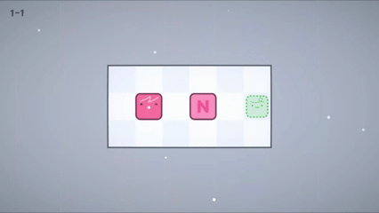
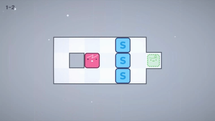
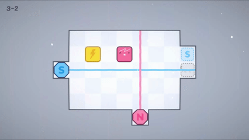
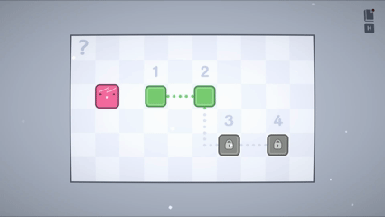

개요
| 게임명 | 노노 & 소소 (Nono & Soso) |
|---|---|
| 장르 | 자력 퍼즐 (소코반) |
| 플랫폼 | PC (Steam) |
| 출시 예정 | 2027년 1분기 |
| 지원 예정 언어 | |
| 개발사 | Team Magnet |
| 엔진 | Unity 6 |
설명
특징
노노와 소소, 하나의 캐릭터 두 개의 극


단순한 규칙, 깊어지는 퍼즐


막히면 다른 길로

편하게 즐기는 퍼즐
손끝으로 느끼는 자력
스크린샷
수상 & 대외활동
- 2026.10 - 대구콘텐츠페어 플리더스 인디게임존 전시 참가
- 2026.06 - 빌드051 전시 참가
- 2026.06 - PAN:PLAY 「게임, 드디어 무대에 서다」 전시 참가
- 2026.06 - 스마일게이트 인디 부스트랩 참여
- 2026.04 - 순천향대학교 창의인재동반사업 기획 부문 프로젝트 선정
- 2026.03 - 스마일게이트 인디게임 프로토타이핑챌린지 3기 선정
팀
문의
Contact: 1217pgy@naver.com
Steam: store.steampowered.com/app/3591430/
X: x.com/nono_and_soso